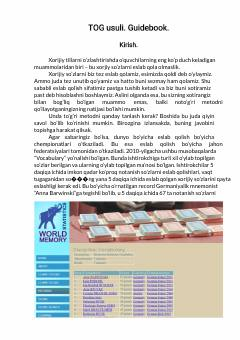

ITMnemonika yordamida xorijiy so'zlarni tez va oson yodlab qolish bo'yicha amaliy qo'llanma.
Ushbu qo'llanma xorijiy tillarni o'rganishda so'zlarni tez va samarali yodlab qolish uchun mnemonika usullarini tushuntiradi. Kitobda tasavvur va assotsiatsiya yordamida xotirani kuchaytirish bo'yicha amaliy mashqlar keltirilgan.